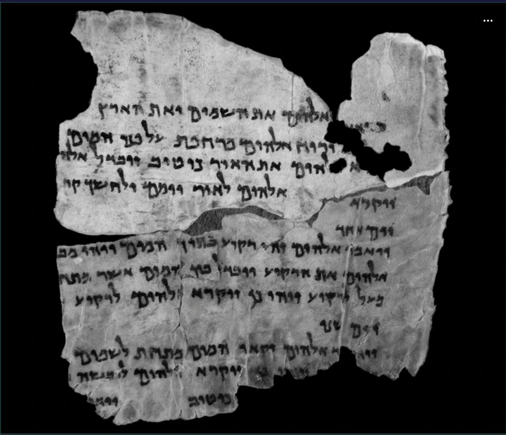
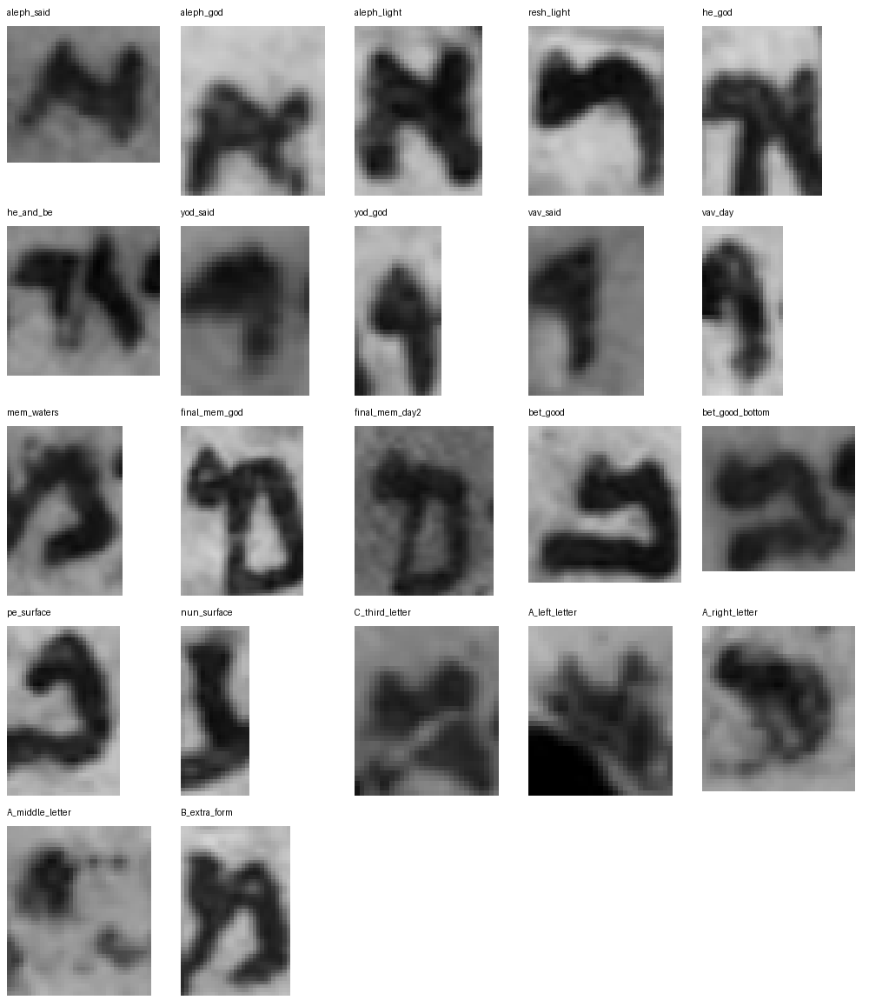
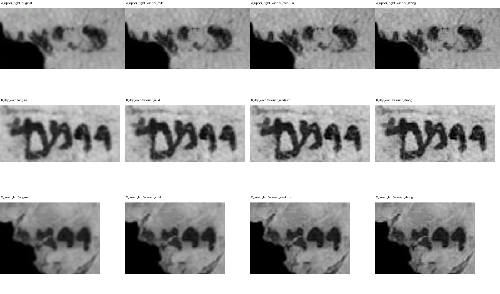

A Hebrew fragment / text and evidence
Read the fragment. Follow the reasoning.
The surviving phrases follow Genesis 1. Explore what the image preserves,
what context suggests, and what a reference text supplies.

01
Read the text
Explore each tab below to compare the transcription and translation, from surviving text to contextual readings and fuller reconstruction. Each tab makes its method and added assumptions explicit.
These marks describe the Hebrew evidence. English grammar and word meanings still require interpretation.
Why the opening has a gap: “In the beginning” is not securely preserved here. It appears only in the reference-led reconstruction. “Created” is a provisional reading of a detached group.
Possible continuation: ויא̣◊ (S15) may begin ויאמר, “And [God] said,” at Genesis 1:11. This remains a contextual conjecture. The remaining letters and the following divine name are not claimed as visible, and this completion is excluded from the reconstructed passage.
Download all paired readings and phrase-by-phrase evidence · Structured interpretation data
02
Inspect the image
Explore each tab below to compare disputed readings, magnify the source image, examine word boundaries, and check passage locations. Use the controls within each tab to follow the evidence.
Disputed readings
Choose one of the four disputed readings below to see its explanation and comparison letters. Open a comparison crop in the Pixel inspection tab for a magnified view. The labels distinguish strengthened readings from those that remain provisional or partial.
Visible structure
Comparison and conclusion
Compare the same hand
Pixel inspection
Back to the reading ↑The left view always shows unchanged source pixels. Change the right view, enlarge both, or open a reference crop. Large views can be panned inside their frames. Pointer coordinates refer to the original screenshot.
Locate this region in the source image
Word boundaries
64 manually annotated word or partial-word windows cover the 15 physical groups. Select a group, then click a word window or its Hebrew button to inspect it. Numbering follows reading order from right to left.
These are approximate inspection boxes, not exact stroke contours or automatic OCR. Missing stretches are not assigned word counts. Prefixes such as ו and ל stay attached to their graphic words.
Graphic words and grammatical prefixes
The plus signs below describe grammatical components. They do not claim that spaces separate those components in the image.
| Graphic word | Components | Segmentation note |
|---|
Measured spacing around יומם
Across three thresholds, the low-ink runs outside the group are 20–23 pixels on the left and 30–32 on the right. The interior runs are only 3–6 pixels. This supports one graphic word, while the two mem-shaped structures have no separating vertical gap. Spacing alone does not identify the letters.
The measured source band is x=390–601, y=545–591. A low-ink column has fewer than three grayscale pixels below the chosen threshold. This is a local measurement, not a universal word-boundary rule.
Passage locations
The surviving phrases align with Genesis 1:1–10. The final partial word could begin 1:11, but cannot locate itself independently. The modern verse numbers below describe the reference passage; they are not markings visible on the fragment.
Reference: Mechon Mamre, Hebrew text of Genesis 1, opened directly for this added layer. Pointing and punctuation are removed for comparison. No image search or manuscript-identification search was performed.
| Physical group | Passage | Basis and uncertainty |
|---|
Apparent spelling differences
| Image reading | Reference | Location |
|---|---|---|
| יומם | יום | 1:5 |
| לשמים | השמים | 1:9 |
These are provisional differences between this image reading and the reference, not established manuscript variants.
Physical position versus text order
The textual sequence suggests S02 before S01 and S06 before S05. Those associations help formulate a layout hypothesis; they do not prove physical joins. S10 spans the modern division between 1:7 and 1:8.
Genesis 1:3 has no secure surviving group in this transcription. Its absence here does not demonstrate an omission by the scribe. Original column width and the amount of missing text remain unestablished.
Alignment method and alternative matches
The software tests only Genesis 1:1–11, not the whole Bible. It compares contiguous windows with the same number of tokens, so an incorrect word split can distort the result. Cost is an edit-distance ranking, not a probability. Repeated short phrases need context.
Reference text used, with vowels and punctuation removed
Download word coordinates, spacing profiles, reference text, and alignment candidates
03
Review the method
Explore each tab below to follow how the readings were reached or examine what the software could and could not establish. Compare the reasoning, alternatives, and limits behind the conclusions.
Reasoning and hypotheses
Letter identification, word completion, passage placement, and English meaning are separate decisions. The records below identify where those decisions depend on one another. Qualitative judgments are not calibrated confidence scores.
Working hypotheses and alternatives
External references and search scope
Reference text: Mechon Mamre, Genesis 1. Lexical sources are linked with the hypotheses that use them. The English translations here are composed for this analysis.
Software and limits
Explore the image-processing checks and the shape-matching experiment. The controls below show the audit, comparison glyphs, and deblurring hypotheses. Software scores do not establish a reading on their own.
Image inspection
- Exact crops and nearest-neighbor enlargement preserve pixel correspondence.
- Autocontrast, background subtraction, unsharp masking, and three thresholds expose stable and unstable features.
- Three Wiener-filter settings test mild deblurring hypotheses. The original blur kernel is unknown; no setting recovered a decisive missing stroke.
- Clearer letters and repeated words from this screenshot provide the comparison samples.
The shape matcher failed its control check
It used manually labelled local crops, a soft ink mask, aspect-preserving normalization, small translations, and soft Dice overlap. Its nearest reference agreed with only 7 of 13 held-out manual labels. The tiny sample is neither expert-labelled ground truth nor representative training data.
No reading is accepted on the basis of these scores. Threshold-dependent rankings and confusions are retained in the raw results.
Show the full matcher control audit
| Held-out sample | Manual label | Nearest class | Agreement |
|---|
View the glyph atlas

These manual crop labels are hypotheses used for the diagnostic experiment, not independently verified ground truth.
Compare the deblurring hypotheses

The screenshot is the present evidence limit. A higher-resolution source photograph or a differently illuminated image could add information; another filter applied to these pixels does not provide an independent observation.